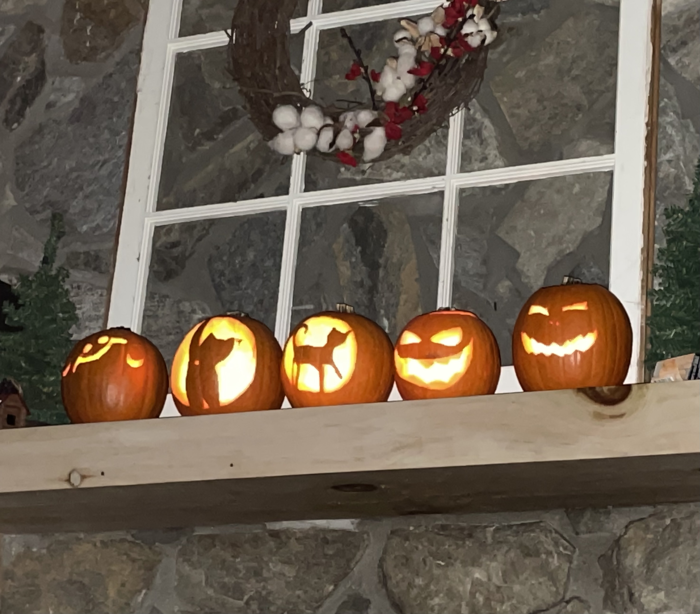

My husband and I own a small zoo including two dogs, two cats, and a bearded dragon. I love animals, which is good because they take up a lot of our free time!
I also have a passion for all things in the realm of sustainability. I think one of the most imporant things we can do in this day and age is to care for the Earth and everything in it. I'm passionate about reducing my carbon footprint, composting, and recycling. If you'd like to get me to talk for hours, ask me about any of these things! Afterwards, I'll thank you for attending my TED Talk :).
Halloween is the best holiday, and you'll never convince me otherwise!
Here are some more things I like to do for fun: